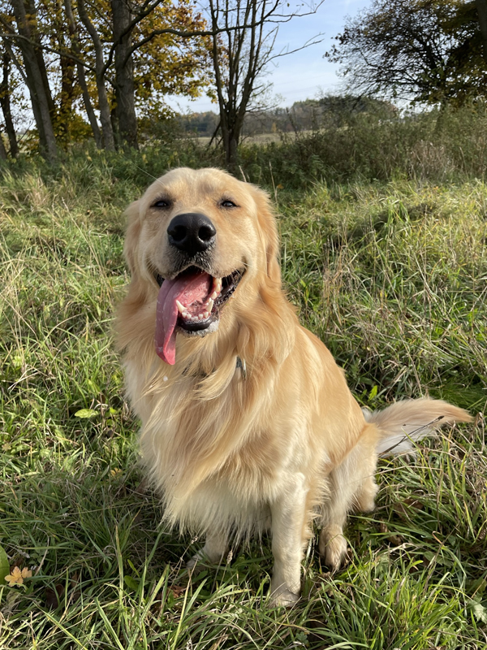

Zlatej Ďábel
Energický, hravý a sebevědomý pes. Miluje pohyb, aportování a pozornost.
Narození: 15.3.2021
Zdravotní testy:RTG kyčlí: HD A, 12. 5. 2023
RTG loktů: ED 0, 12. 5. 2023
Oční vyšetření: negativní nález, 20. 6. 2023
Klíčové úspěchy1. místo na místní výstavě psů.
Vítěz klubové soutěže v aportování.